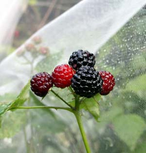

The No-Spray Way To Protect Plants
Lightweight fabric row covers are an easy way to protect your crops from insects and critters, and extend the season.
By Barbara Pleasant
February/March 2008
In many organic gardeners’ storage sheds lurk what look like stashes of dirty bed linens. These are actually sheets of reusable fabric row covers, which serve as barriers between plants and those creatures that would destroy them. Without ever picking up a sprayer, you can use row covers to eliminate problem insects, and they prevent browsing by rabbits and deer, too. When combined with a weed-suppressing mulch (such as straw or grass clippings spread over wet newspapers), row covers often increase yields of peppers, strawberries and cucumber-family crops by more than a third.
Unlike plastic, which blocks rain and quickly heats up in the sun, the zillions of tiny holes in fabric row covers let rain in and heat out. Perforated plastic row covers do vent out hot air through thousands of holes or slits, but they are much less durable than breathable fabric row covers, which can be reused for several years and serve multiple purposes. With fabric row covers in place over your spring salad patch, you can stop worrying about biting winds and hungry rabbits. In summer, you can sleep easy knowing your melons are safe from four- and six-legged saboteurs that sneak in at night.
Lessons In Light
Garden row covers come in different weights, with thick versions such as Agribon 50 or various “frost blankets” providing up to 8 degrees of frost protection. The density needed to retain heat comes at a cost, however, because heavyweight covers admit only 50 percent of available light. This level of light deprivation nearly offsets these covers’ insulating benefit, though thick covers are great to use in late winter to promote heavy, early production of strawberries and fall-bearing raspberries such as the ‘Heritage’ variety.
Midweight row covers, such as Agribon 19, Reemay and Covertan 17, admit 75 percent to 85 percent of available light. They also provide 2 to 4 degrees of frost protection and excellent buffering of strong winds. The fibers in midweight row covers are dense enough to provide multiseason durability, but still porous enough to admit rain and ventilate themselves on sunny days. Should a serious cold snap hit, you can simply add a sheet of plastic or throw an old blanket on top of the row cover.
As the weather cools in the fall, midweight row covers are great for wrapping around caged tomatoes or peppers that are heavy with ripening fruits, or you can use them to keep aphids, leaf miners and flea beetles from finding your leafy greens.
Very lightweight row covers give little or no frost protection, but they also retain very little heat while admitting 95 percent of available light. These covers are standard equipment for excluding squash bugs, cucumber beetles and squash vine borers from young squash, cucumbers and pumpkins, or for keeping cabbageworms and root maggots from finding your broccoli. Row covers do need to be left off some plants to allow for pollination. Most vegetables that produce flowers before they make a crop, such as squash, cucumbers, tomatoes and peppers, require repeated visits from insects to spread pollen from flower to flower. Root crops and leafy greens need no pollination, so they can be grown under covers until they are ready to pick. Last August, a featherweight row cover held in place with clothespins spooked the family of deer that had taken to eating my ripening grapes for their breakfast.
One of the disadvantages of row covers is that they become soiled and dingy. Enter wedding net, often called tulle, which is sold in 60- to 90-inch widths at craft and fabric stores. In early summer, when I switch from midweight white row covers to the ones I’ve made from wedding net, it’s as if my garden changes from peasant underwear to polished formal attire. I use the finest mesh to keep flea beetles off my eggplants, but the regular one-sixteenth-inch mesh effectively excludes the moths whose larvae become army worms and cabbageworms, flies whose offspring become root maggots - and marble-sized hailstones, too.
Little, if any, heat builds up beneath tulle covers, which admit more sunlight than the featherweight row covers sold as insect barriers. Grasshoppers chew through the netting a little faster than they make it through regular row covers, but grasshoppers are less likely to make holes in either fabric if it is held above the plants’ leaves. I also use wedding net to keep birds from taking too many blueberries. Compared to bird netting, tulle is much less likely to snag on branches or accidentally snag hummingbirds. When bushes are covered with tulle that is gathered up beneath the bushes and secured with clothespins, even the most experienced robins can’t get to the fruit.
Getting a Custom Fit
Standard row cover widths range from 51/2 to 8 feet, and wider is always better. When shopping for row cover, be sure to get widths that will match the dimensions of your beds. Row cover that’s 83 inches wide gives you 12 inches of overhang on each side when installed over a 3-foot-wide bed held aloft with 6-foot-long hoops stuck deep in the ground. Twelve inches of overhang is perfect if you’re attaching the edges to bamboo poles or weighting them with boards, bricks or sandbags. A 2-foot-wide bed could be secured beneath a narrower 61-inch-wide piece, but such a width over a 3-foot-wide bed could be raised no more than 12 inches above the soil line.
Row covers can be allowed to rest atop many plants, though peppers, tomatoes and others with fragile growing tips do better when the cover is held aloft. Many people support row covers with 9-gauge wire cut into 6-foot-long pieces (Lee Valley Tools, sells a precut package of 10 for $14.50). You also can make hoops from inexpensive plastic pipe, which costs about a dime per foot at hardware stores. The ends can be pushed into the soil, or you can slip them over sturdier rebar stakes. On one of my framed raised beds, the planks on the long sides are equipped with vertical pipe sections into which I insert hoops made from slender saplings cut from the woods. (You can learn more about using saplings in the garden by reading Make Simple, Beautiful Garden Fences and Trellises. - Mother)
You can support row covers with stakes as long as the tops are smooth rather than jagged. Rebar or plastic-pipe stakes topped with rounded end caps work well, or you can use “living stakes.” In spring, dot the bed with a few corn or sunflower seedlings, and let them lift the row cover as they grow.
Tailoring Tips
When you run into situations where your row covers’ lengths or widths come up short, you can overlap pieces (making it easy to peek inside through the slit), or you can attach pieces using an ordinary paper stapler or a needle and thread. In the interest of research, I tested the strength of seams made with basting stitches on a sewing machine, hand stitches and staples placed 2 inches apart. After abusing the samples in a bucket of muddy water and then setting them in the sun for a few days, the stapled seams showed fewer gaps and less tearing than the sewn ones. For quick jobs, simply attaching pieces of row cover together with spring-type clothespins will do.
After the row cover is on the bed, you may still need to weight the bamboo poles with bricks, heavy stones, or sandbags - a great reuse for gallon-size freezer or food storage bags. When loaded with 10 cups of sand and 3 cups of water, these sandbags weigh about 8 pounds, and instantly mold themselves to the spot where you put them, or use wire staples to hold down the poles on each end of the cover.
Under very windy conditions, it’s a good idea to further secure row covers by clamping them onto their support hoops. If you use 9-gauge wire hoops, buy a few feet of three-eighths-inch vinyl tubing, and use kitchen shears or wire snips to cut it into 2-inch pieces. Then slit each piece open lengthwise, and pop them onto the hoops after the row cover is installed. If you use flexible pipe as support hoops, make clamps from pipe of a slightly larger diameter than the pipe used for the hoops, using a utility knife to make sure, clean cuts.
Making them Last
Clean row covers last longer, because soil particles that become wedged in the fibers have an abrasive effect. Promptly gathering and storing row covers between uses will go a long way toward keeping them reasonably clean, as will using poles or weights to hold the edges rather than burying them beneath soil or mulch. Should a piece get very dirty, hang it on a clothesline and hose it down. Allow it to dry completely before storing it (I store mine in plastic dry cleaning bags). If you have several pieces, use a laundry marker to label a corner of each one with its size and type, or label the bags in which you store them. Once row covers are crumpled on a shelf, they all look alike.
After three years or so of frequent use, you can cut ragged row cover into pieces to use for smaller jobs, like wrapping individual tomato cages or keeping flea beetles from finding a short row of radishes. Cut into strips, worn row cover makes good plant ties, or you can wrap the strips around tree trunks in need of protection from winter sun or borers. Ripening melons swaddled in row cover scraps are rarely sampled by birds or mice, and young ears of corn covered with row cover bonnets held in place with rubber bands become off limits to the moths whose larvae become corn earworms. Last fall, I went out on a chilly morning and stuffed a scrap of row cover into the entrance of a badly located yellow jacket nest so I could safely harvest my butternuts. It really worked like a charm.
Row covers work great to protect your crops from a wide variety of pests, including:
- Cabbageworms
- Flea beetles
- Squash bugs
- Colorado potato beetles
- Root maggots
- Leaf miners
- Deer
- Rabbits
- Birds
- Cucumber beetles
- Army worms
- Grasshoppers
- Squash vine borers
Veteran garden writer Barbara Pleasant has used row covers to add more than three months onto the growing season in her Virginia garden.
|
ELAYNE SEARS Row covers work great to protect your crops from a wide variety of pests, including: cabbageworms, flea beetles, squash bugs, potato beetles, root maggots, leaf miners, cucumber beetles, army worms, grasshoppers, squash vine borers, deer, rabbits and birds. |
ELAYNE SEARS The best edge-anchoring plan involves attaching the row cover’s long edges to bamboo poles, straight saplings or pieces of 2-by-2 lumber. Use a stapler to make the hems and then slide in the poles. This makes it easy to lift the covers off for weeding and to allow pollination.
|
ELAYNE SEARS Ripening fruit is a tempting treat for birds and squirrels. You can prevent losses by covering your tree with a layer of tulle netting, gathering and securing it around the trunk of the tree. |
|
 BARBARA PLEASANT Robins and many other birds love black raspberries, but bird netting is hard to use with brambles because it gets stuck in the thorns. Tulle sticks some, too, but not nearly as badly as bird netting. |
 BARBARA PLEASANT In late summer when fall broccoli faces a formidable lineup of insect pests, tulle will keep them off of seedlings without retaining heat. |
BARBARA PLEASANT Grasshoppers would have demolished these pretty greens if they could have gotten to them. But with tulle, they're standing strong in September. |
|
BARBARA PLEASANT These lucky cucumbers never knew the presence of single cucumber beetle. |
|
|